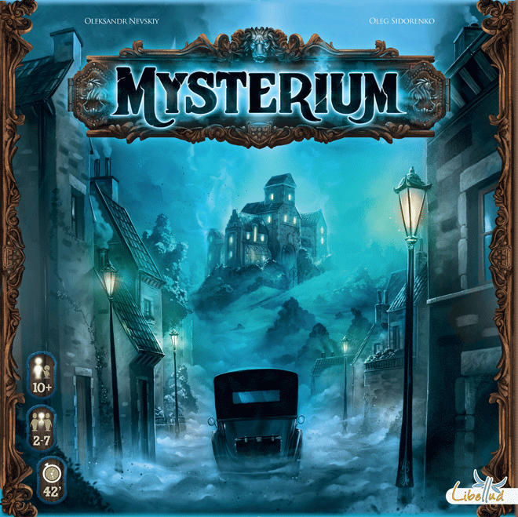
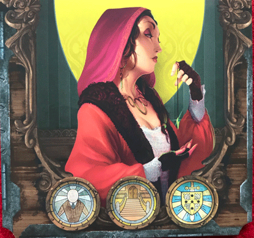
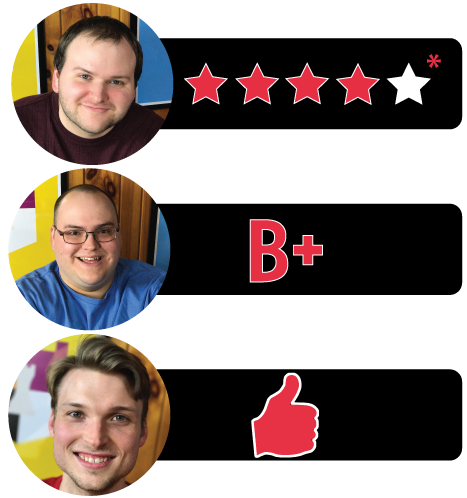

In this Mysterium review, Board Crazy analyzes the ghostly co-op mystery game designed by Asger Harding Granerud, and published by Asmodee and Libellud. In this game, psychics try to solve an old murder in order to free the ghost that haunts the manor. Time to decipher the visions!
boardgamegeek.com/…/asger-harding-granerud
D reviews Mysterium
 (Author’s note: this review is meant to accompany our gameplay video
and will not go in-depth on the game’s rules. If you’re interested in
learning how the game is played, please watch the video. It’s not bad.)
(Author’s note: this review is meant to accompany our gameplay video
and will not go in-depth on the game’s rules. If you’re interested in
learning how the game is played, please watch the video. It’s not bad.)
Here’s a fact about me that I think I mentioned in one of our news videos but is once again somewhat relevant: I’ve never played a game of Clue (or Cluedo, to my British friends). I realize that this is a pretty strange blind spot for someone who dares to review board games, but the game and I have just never crossed paths. I’ve seen the movie! That was pretty good. And I know the characters and the point of the game, but the rules are foreign to me. I write all of this because it feels like Clue is the obvious benchmark with which this week’s game, Mysterium, should be compared. After all, the goal of both games is the same: deduce the culprit behind a murder, where they committed the crime, and what weapon they used to do so. Of course, Mysterium is cooperative whereas Clue is competitive, but the comparison still seems apt. So if you’re reading this as a fan of the older game looking to see if this might be up your alley, then I’m afraid to inform you that you’ll have to look elsewhere. However, if you’re simply curious if this game is any good, then read on!
One of the psychics trying to solve the murder.
Mysterium is good. …what, you want more? Fine, but before I go any further, I should mention that our sessions of this game have strictly been with three players, so my review will be in that context. The 2- and 3-player games have some separate, stripped-down rules that forego a couple of major mechanics. One of them is the “clairvoyance” system that involves players voting on the deductions of their fellow players in order to get advantages at the end of the game. The other involves the collective vision that the psychics all share to make their final guess of the culprit. Both seem pretty fun, and I’m disappointed that I can’t comment on them with any authority, so consider my rating to maybe be a half-star lower than the game deserves.
Fortunately, the 3-player version of this game is still completely playable and quite fun. Each player taking control of two psychics, along with the variable difficulty level, prevents things from being too simple. I wouldn’t call Mysterium particularly difficult anyway (it is a family game, after all), but the “hard” setting provides a solid challenge for cleverer players. The main mechanic of the game is its greatest triumph though, which ensures that the game will be fun with any number of players. The ghost gives the psychics clues in the form of cryptic vision cards, and it’s up to the psychics to decipher what the ghost is trying to tell them. The cards all have numerous little details on them which can be used to make connections, but most of the time they aren’t terribly obvious. The fun comes from trying to get on the same wavelength as the people you’re playing with, and choosing correctly on your first try is immensely satisfying.
An example of a Vision Card
Speaking of the cards, my goodness the art is nice. There are a number of artists credited and they all deserve major kudos. The vision cards are the most striking, of course, presenting fantastic and terrible scenes with an appropriately dreamy quality to them. The art in the other areas is no slouch, either. The characters, places, and items are of a more realistic style, and all do a good job of evoking the creepy, old manor where the game takes place. The game’s components, like the clock that tracks the rounds, are similarly effective. Everything is nicely made, as well. The ghost’s screen is a particularly solid piece of plastic similar to a dungeon master’s screen, and it is nicely designed to keep everything in order.
If I have a criticism, it’s that I wish the characters in the game had unique powers. In the rulebook, there is a page dedicated to their backstories, which includes their psychic specialty, like tarot cards or crystal balls. Unfortunately, this is all just a bit of a tease for flavor, as these specialties are never utilized. While I always appreciate a bit of backstory, it seems like an element they had intended to incorporate but weren’t able to figure out. It’s not a major flaw, obviously, but a disappointment nonetheless. I think it would have been particularly nice to have special abilities in 2- and 3-player games that are a little light mechanic-light. Otherwise, Mysterium is a fast, fun, and family-friendly game that I will gladly recommend to most anyone, particularly if you’re looking for something to fit that Halloween mood.
D’s Rating: Four Stars out of Five*.
Will reviews Mysterium
 A
murder has been committed and the victim’s ghost haunts the halls of
Warwick’s Manor. A team of psychics has been summoned to communicate
with this spirit with the hope of solving the crime! That’s the plot of
Mysterium, but there’s so much more to it. There’s no other way to put
this: Mysterium might be the most visually appealing tabletop game ever
made. It doesn’t have a board, and the player pawns are basic colored
globes, but none of that matters. This game is about the cards, and man
are they beautiful. Oh yeah, there’s also some really enjoyable gameplay
here as well, so that’s cool. But that art…
A
murder has been committed and the victim’s ghost haunts the halls of
Warwick’s Manor. A team of psychics has been summoned to communicate
with this spirit with the hope of solving the crime! That’s the plot of
Mysterium, but there’s so much more to it. There’s no other way to put
this: Mysterium might be the most visually appealing tabletop game ever
made. It doesn’t have a board, and the player pawns are basic colored
globes, but none of that matters. This game is about the cards, and man
are they beautiful. Oh yeah, there’s also some really enjoyable gameplay
here as well, so that’s cool. But that art…
The game board setup – from bottom to top, the players need to guess the character, the location, and finally the object.
Let’s just get this out of the way – the artwork for Mysterium is probably the best I’ve ever seen, especially given the sheer amount of it. The artists are Igor Burlakov, Xavier Collette, Oleksandr Nevskiy, and Oleg Sidorenko. I give them all credit because they simply deserve to be named, and I must say “Bravo” to all of them. The art on the Vision Cards is especially striking, and when you consider that it’s these cards that provide the players with the necessary clues to solve the murder, it becomes even more impressive. The Vision Cards all feature colorful, metaphorical artwork that can hint at more than one clue, of which there are many. This alone is a stunning achievement in game design. All in all, there are 84 Vision Cards, 18 Character Cards, 18 Location Cards, and 18 Object Cards, and each one of these cards has completely unique artwork that blew me away.
When it comes to gameplay, I’d say that it mostly lives up to the quality of the artwork and physical components. I’ve been lucky enough to play Mysterium multiple times, but unfortunately I’ve only ever been able to play the 3-player variant that’s quite different from the standard 4-player+ version. In a way, that affects my ability to truly scrutinize Mysterium in a comprehensive manner, so I’ll only touch on the 3-player gameplay. And as it is, the 3-player variant of this game is really good, and we had a fun time playing it. To start, we each were assigned two psychics instead of one, which might seem intimidating, but it actually isn’t. Controlling two psychics does add a fair amount of pressure to the players not playing as the ghost, but that pressure supplements the tension that’s otherwise missing due to elements of the gameplay being removed for a 3-player game. In other words, it was a savvy design decision made by the game’s creators.
Another example of a vision
Having to think about more than one Vision at a time is pleasingly stressful, and the experience is entirely exclusive to a 3-player game. Other than that, the gameplay is basically the same as the 4-player+ version: we utilize the Visions available to us to figure out who the killer might be, where the murder might have taken place, and what weapon might have been used to commit to crime. In the end, we take our sets of options, lay them out, and await the ghost’s final set of Vision Cards. I have to say, I love the cooperative nature of this game, especially at the very end. Scanning the options we have and selecting the killer is more satisfying with friends, and it’s less scary since you know that if you’re wrong, you’re not the only one responsible for the failure. And most likely, you won’t be wrong. At its core, Mysterium is not a difficult game, nor is it an unforgiving one. At least, it isn’t in its 3-player form.
Honestly, my only complaint in regards to this game and its 3-player variant is that it’s almost too easy. Part of the joy of the 4-player+ version is that the players have to vote at the end for who they feel is the killer, and that means there’s a better chance that the vote will be incorrect. In a 3-player game, there’s no such vote; you just choose. I should note – there are three different difficulty settings in the rulebook of Mysterium. But something tells me that no matter the difficulty you select, you’ll almost always win in the 3-player variant. It’s pretty clear that this game is at its best with four or more players, so I recommend playing it that way if you can. If you can’t, I still recommend Mysterium because it’s really entertaining.
There are so many interesting visions in Mysterium…
All in all, I really enjoyed my time with this game, and I grew to love its agreeable artwork and gameplay. Yes, Mysterium can be too easy sometimes, and sure, the 3-player version is missing some of the best parts of the gameplay. But that only means I really want to play it again with more people, and that’s definitely a sign that this game is replayable and just plain good. I didn’t even touch on how one player uses the ghost character and isn’t supposed to talk the whole time, which is a really strong mechanic. Then again, if your group is like ours, getting one person to shut up for 45 minutes is basically impossible. Thank goodness the silence rule is optional.
I give Mysterium a: B+
Graham reviews Mysterium
We’re sticking to a similar genre this week with Mysterium. I mean, it is Halloween so there really isn’t a better time to play these type of games. Anyway, I’m glad we finally got a chance to play Mysterium – I have always heard great things about it. I would like to note that we only played the three player variant, and the game is quite different with more than three players, so my review is going to be strictly about this version of the game. With that said, Mysterium was still a ton of fun to play. It’s relaxed, intuitive, and the art is absolutely stunning.
This is the screen that only the ghost sees that shows them which cards match which psychics.
I won’t go into detail on the rules, but I’ll give you a summary of the game. If you want to learn more about how to play Mysterium, please check out our playthrough here. In Mysterium, one person plays as the ghost and everyone else plays as a psychic. The ghost’s goal is to help the psychics solve the murder by giving them a series of clues. Since the ghost can’t communicate with the psychics through words, these clues have to be given in the form of visions. If the psychics can solve the murder within the allotted time, everyone wins and the ghost’s soul is finally put to rest.
When you first learn about Mysterium, it sounds like an interesting take on Clue. You know, “He was killed by Col. Mustard, in the study, with the candle stick”. Mysterium is essentially you’re trying to do the same thing, but you quickly forget about this similarity and realize they’re really not that similar. In fact, I think this game has more in common with Codenames than it does with Clue. The main thing that really makes Mysterium stand out is its focus on visuals. As I mentioned, the ghost is unable to use words to communicate with psychics, so they are forced to use visions. The ghost shares these visions with the psychics, who then discuss them and try to decipher who, where, or what these visions are supposed to represent. Mysterium comes with 84 Vision Cards, and their meanings are all dependent on the relationships between the ghost and the psychics. Some Vision Cards a little more concrete, while others are quite abstract. The mix of these cards allows the players to be creative with both giving the clues and deciphering the clues. It’s very satisfying to work together and figure out what each vision means.
Another example of a beautifully designed vision card.
This brings me to another thing that I really enjoyed about Mysterium: the cooperative gameplay. Naturally, this game feels like it should be competitive (e.g. First person to figure out all of their clues wins.). And in a sense, I still got a little competitive when playing because I wanted to figure out my clues first or I wanted be the best ghost. However, the cooperative gameplay really allows for a more relaxed experience. This allows you to really focus on the artwork, which is the focal point of the game. Unfortunately, the relaxed environment does remove some excitement from the game, which is definitely my biggest issue with Mysterium. In a three player game, the most exciting part is handing out the visions, and you only get to do that if you’re the ghost. Yes, it’s exciting to receive and discuss the visions, but there isn’t as much thrill there. Now, I know with more players there’s a clairvoyance mechanic that changes up the gameplay for the psychics, so I’m guessing this issue only really exists in the three player variant. I would really love to see how a larger game changes the gameplay, for better or worse.
As you can an tell, I really enjoyed Mysterium. Even though it didn’t really really provide us with the scares we hoped to get on Halloween, I came away really satisfied with my experience. I definitely want to play with more people to see how different the experience is, but regardless of how many people you have, you should give Mysterium a chance. It’s worth it. I give Mysterium one thumb up.
Mysterium Game Review – Board Crazy’s Ratings

Leave a Reply
You must be logged in to post a comment.